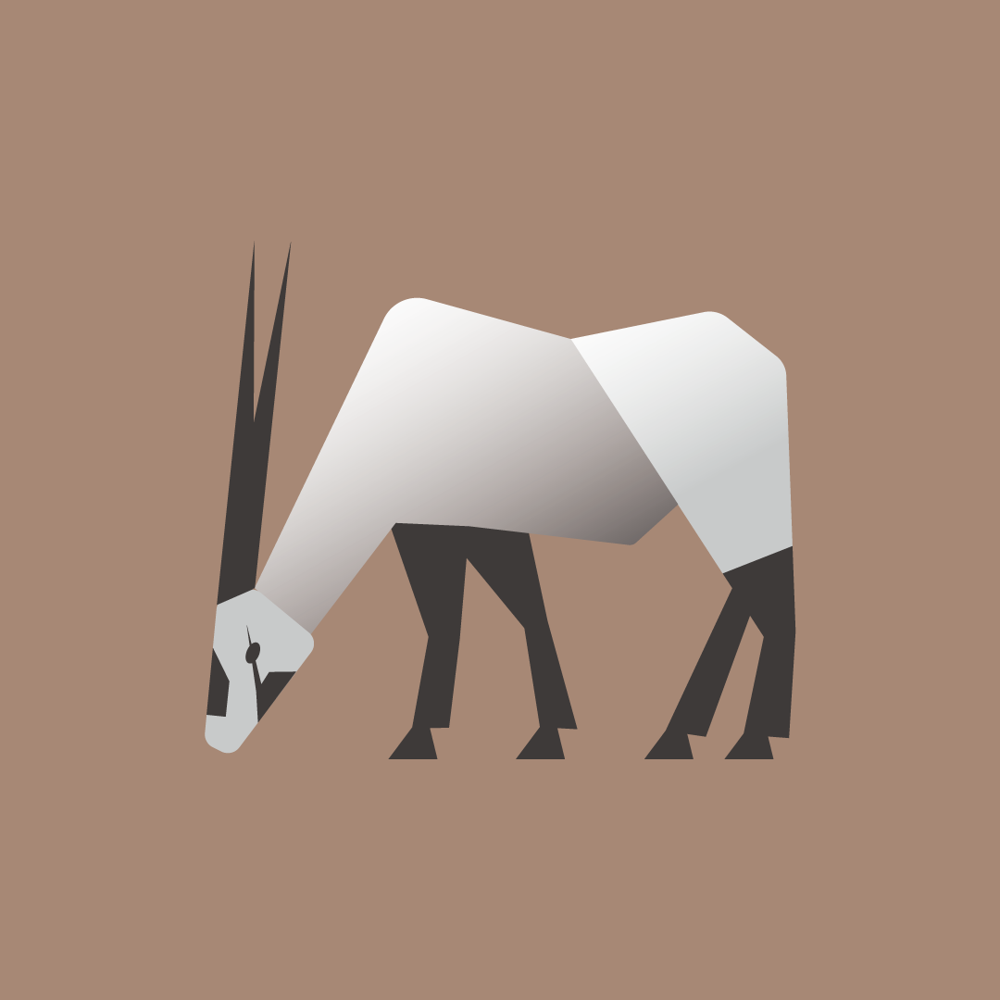

＝
WORKS
寺田の脳 セザンヌ

寺田の脳で使用したGIF画像、個人的にお気に入り。
寺田の脳 亀
寺田の脳で使用した画像、できるだけシンプルにした。
寺田の脳 アラビアオリックス
寺田の脳でヘッダーのみに使用している画像、元の形を残すのを意識した。
正月イラスト 辰
正月にいつも描いているイラストの辰年用、鱗が大変だった。
寺田の脳で使用したGIF画像、個人的にお気に入り。
寺田の脳で使用した画像、できるだけシンプルにした。
寺田の脳でヘッダーのみに使用している画像、元の形を残すのを意識した。
正月にいつも描いているイラストの辰年用、鱗が大変だった。